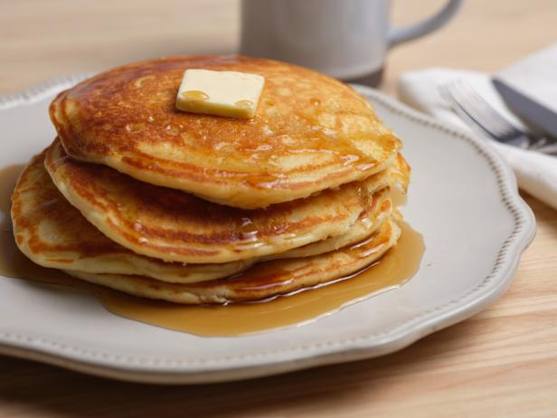

Pancakes

Description
This recipe will show you how to make fluffy
buttermilk pancakes. This is recipe is quick
and easy so that you can enjoy your pancakes faster.
Ingredients
- 1 1/2 cups all-purpose flour
- 3 1/2 teaspoons baking powder
- 1/4 teaspoon salt, or more to taste
- 1 tablespoon white sugar
- 1 egg
- 3 tablespoons butter, mixed
Directions
- In a large bowl, sift together the flour, baking powder,
salt, and sugar.
- Make a well in the center and pour in the milk, egg,
and melted butter;mix until smooth.
- Heat a lightly oiled griddle or frying pan over medium-high,
heat.
- Pour or scoop the batter onto the griddle, using approximately
1/4 cup for each pancake. Brown on both sides and serve hot.